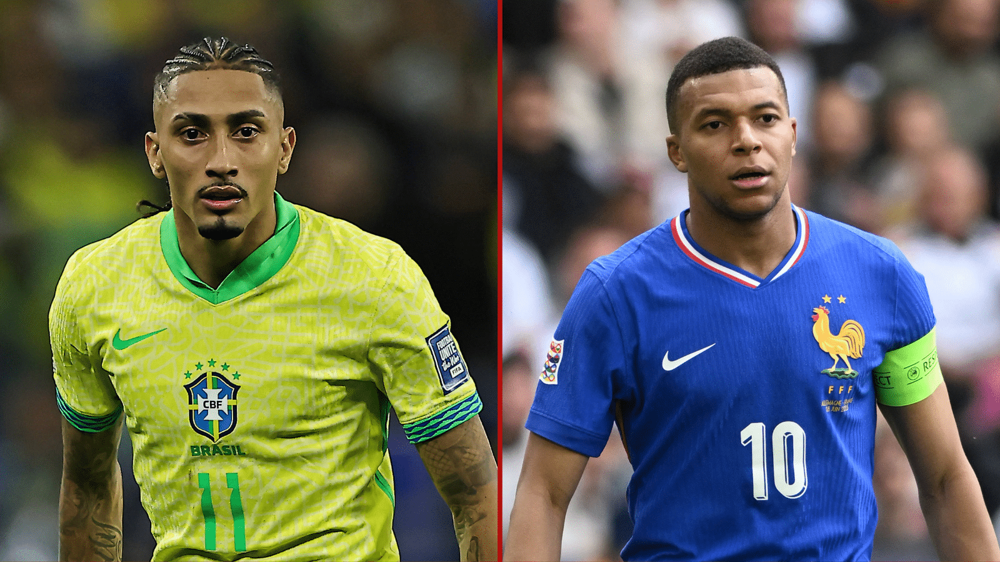
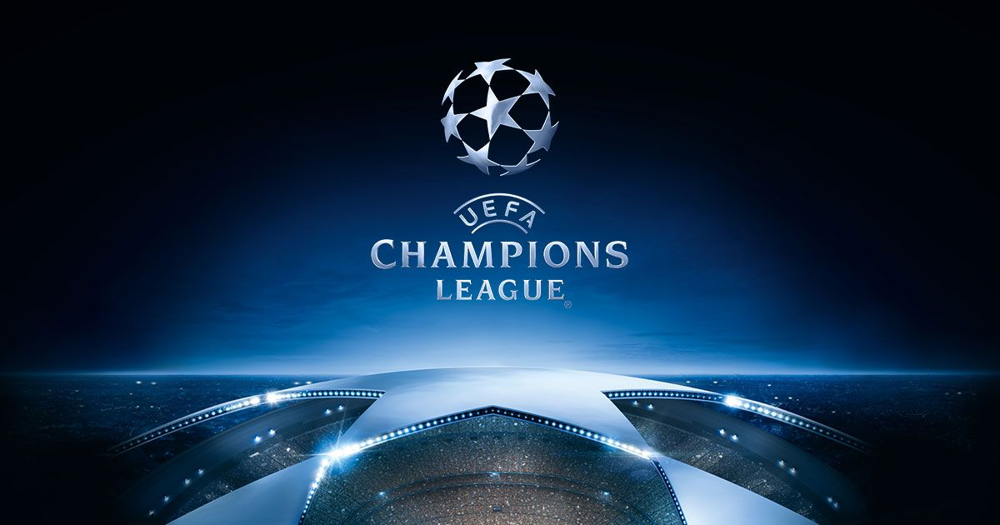

Últimas Notícias!
Amistosos entre seleções agita o mundo do futebol, antes da copa do mundo!

Os amistosos entre seleções nacionais estão deixando o mundo do futebol em suspense,
especialmente com a aproximação da Copa do Mundo. Entre os jogos de destaque estão os confrontos
entre Brsil e França, Alemnha e Suiça, Holanda e Noruega. Que prometem ser emocionantes
e cheios de surpresas. Os torcedores estão ansiosos para ver como as equipes se sairão nesses
duelos, que servirão como um teste importante para as seleções antes do grande evento.
Veja a baixo os horarios e onde assistir cada um desses jogos:
- Brasil x França - 26/03/2026 - 17:00 - Onde assitir:
- Alemanha x Suiça - 27/03/2026 - 16:45 - Onde assitir:
- Holanda x Noruega - 26/03/2026 - 16:45 - Onde assitir:
Ruan_Batista 25/03/2026 - 15:00
Futebol Brasileiro
Campeonato brasileiro
Com o fim da oitava rodada do campeonato brasileiro a tabela muda, e tem time grande que ainda não ganhou
nenhuma partida! O corinthians segue sendo o lider do campeonato ganhando mais uma partida, desta vez em cima do time
do flamengo, pelo placar de 2 a 0. Logo após seguem os times: Palmeiras em segundo, São Paulo em terceiro e Fluminense
em quarto lugar. Por outro lado, o time do Cruzeiro ainda não conseguiu vencer nenhuma partida, amargando as estatisticas
de 4 empates e quatro derrotas, sendo o lanterna do campeonato.
Ruan_Batista 25/03/2026 - 16:00
Futebol Internacional
Champions League

O campeonato mais importante do futebol europeu, a champions league, já tem seus classificados
para as quartas de final, e os confrontos já estão definidos. O destaque fica por conta do confronto
entre Real Madrid e Bayern de Munique, que promete ser um duelo emocionante entre duas das maiores potências do futebol
mundial. Além disso, outros confrontos interessantes incluem Barcelona x Atlético de Madrid, Liverpool x Paris Saint-Germain
e Arsenal x Sporting. Os torcedores estão ansiosos para ver como as equipes se sairão nesses duelos emocionantes, que certamente
proporcionarão grandes emoções aos fãs de futebol ao redor do mundo. Confira a baixo os horarios e onde assistir cada um desses jogos:
- Real Madrid x Bayern de Munique - 07/04/2026 - 16:00 - Onde assistir:
- Barcelona x Atlético de Madrid - 08/04/2026 - 16:00 - Onde assistir:
- Liverpool x Paris Saint-Germain - 08/04/2026 - 16:00 - Onde assistir:
- Arsenal x Sporting - 07/04/2026 - 16:00 - Onde assistir:
Ruan_Batista 25/03/2026 - 22:00